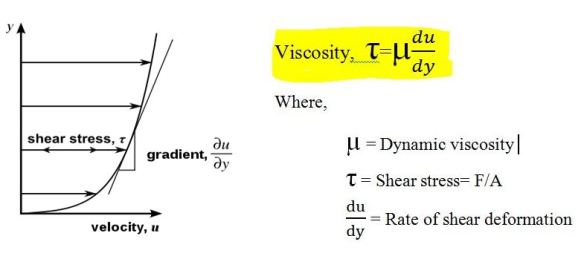

Viscosity
-
Viscosity is fluid’s tendency to resist flow.
-
-
In the above image, we can observe that more force will
be required to stir syrup(high viscosity) compared to water (low viscosity).
-
Viscosity is a temperature dependent quantity.
Viscosity is directly proportional to temperature
in case of gases and inveserly proportional to temperature in case of liquid.
-
-
Viscosity is measured with the help of Newton's law of viscosity.
-
Newton’s law of viscosity states that the rate
of deformation of a Newtonian fluid
a is directly proportional to the applied shear stress , i.e.,
their ratio is
constant at a particular temperature and this constant is known as
coefficient of viscosity.
-

-
Viscosity appears only when the fluid is in motion.
-
Kinematic viscosity is the ratio of coefficient of viscosity
to density of fluid. It is also known as momentum diffusivity.
-
It gives a measure of the ability of a fluid to diffuse any disturbance in it's
momentum.